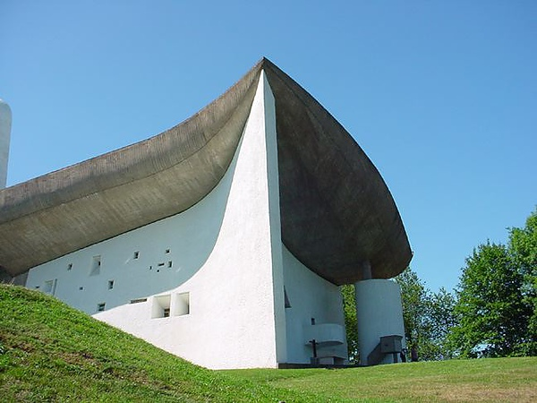

建築特色
廊香教堂（Chapelle Notre Dame du Haut）位於法國東部的弗朗什-孔泰大區上索恩省（Haute-Saône, France）一個叫做廊香（Ronchamp）的小鎮，座落於孚日山區中的一個小山頂上；廊香教堂又稱龍尚教堂，台灣有時根據法語實際發音譯作「宏香教堂」；廊香教堂完成於1954年，是羅馬天主教聖母朝聖小聖堂，公認是柯比意最傑出的作品之一，也是二十世紀教堂建築的一個重要典範，2016年被列為世界遺產。
當時，柯比意設計的馬賽公寓剛剛完成。相較於這個非常理性地控制角度和秩序的居住建築，廊香教堂的設計精神似乎完全相反。也就在此時，柯比意開始接觸印度昌迪加爾的規劃設計作品。他的日本弟子吉阪隆正推測，深入接觸印度文化使一直以歐洲文化為中心的柯比意受到了震撼，對他設計這座宗教建築產生了深遠的影響。
